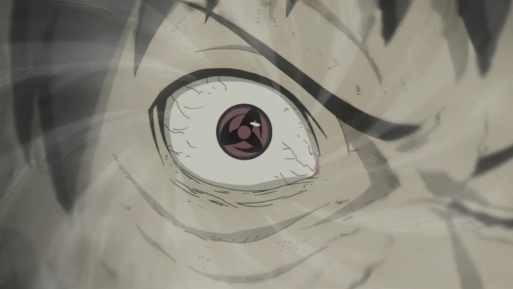
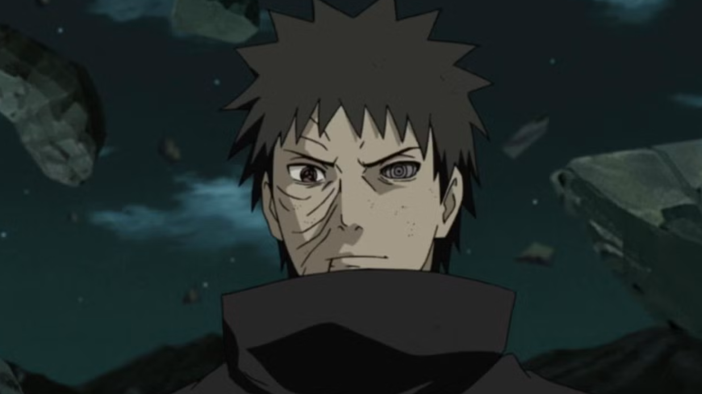
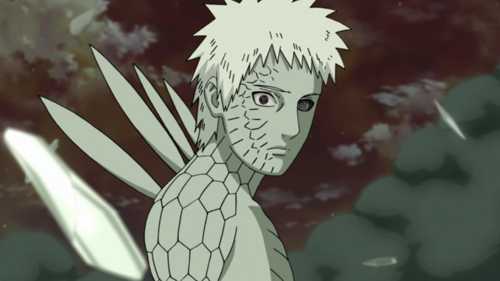
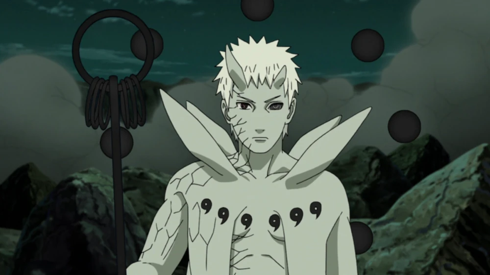

Obito Uchiha (うちはオビト, Uchiha Obito) was a member of Konohagakure's Uchiha clan. He was believed to have died during the Third Shinobi World War, his only surviving legacy being the Sharingan he gave to his teammate, Kakashi Hatake. In truth, Obito was saved from death and trained by Madara, but the events of the war left Obito disillusioned with reality, and he inherited Madara's plan to create an ideal world. Resurfacing under the names of Tobi (トビ, Tobi) and Madara Uchiha himself, Obito subtly took control of the Akatsuki, using them as a means to advance his machinations, eventually going public and starting the Fourth Shinobi World War. However, towards the war's conclusion, Obito had a change of heart and, as atonement, sacrificed his life to save the same world he sought to replace.
1. Kamui

Obito's Mangekyō Sharingan allowed him to perform Kamui, a space–time ninjutsu with greater versatility than Minato's. Kamui served as a gateway to another dimensional space, which he can move all or parts of his body between at will. This granted Obito two distinct abilities: teleportation and what is best described as "intangibility". For teleportation, he absorbed himself through his right eye into the special dimension, and from there he could travel anywhere in the world instantly. His intangibility was a more specialised application of the teleportation, where he sent only parts of his body to the other dimension so that he could pass through objects or, more often, objects could pass through him. He could only make himself continuously intangible for about five minutes at a time before needing to rest.
2. Rinnegan

Obito took the Rinnegan from Nagato's body after he died and implanted it in his left eye socket. Although he used only one eye and was not its original owner, Obito nevertheless gained a great deal of power from it. While he admitted that he could barely handle a single eye, almost losing himself, Obito was capable of performing all of the Six Paths Techniques with the Rinnegan,
3. Juubi Transformation

Obito sealed the Ten-Tails into his body during the Fourth Shinobi World War. Upon becoming its jinchūriki, all of the previous damage to his body was healed and he became stronger, faster, and nearly impervious to damage. He initially lacked control of his mind after the sealing, causing him to literally swell with the Ten-Tails' chakra and react relentlessly to all threats until he could pull himself together. Once he did, Obito became stronger than the incomplete Ten-Tails because he was able to focus its immeasurable power, leaving so-called God of Shinobi unable to compete with him.
4. Gudoudama

As the Ten-Tails' jinchūriki, Obito was able to use Truth-Seeking Balls, ten black orbs comprised of all five elemental nature transformations, and Yin–Yang Release. The balls were his primary weapons and generally floated behind him in a halo-like formation. The black chakra was highly malleable, able to be shaped into various forms for different uses, such as high speed projectiles, protective barriers, explosives, and various weapons, including a shakujō reminiscent of the Sage of the Six Paths'.
For more information about Obito Uchiha:
Click Here